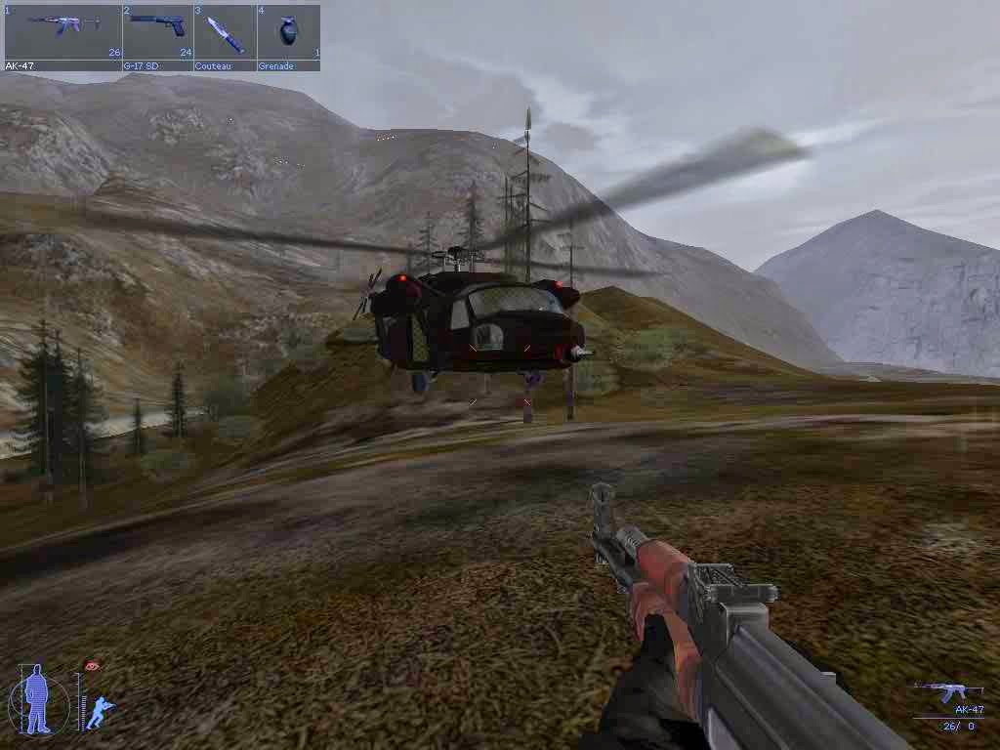

IGI 2: Covert Strike is a 2003 tactical shooter video game developed by Innerloop Studios and released by Codemasters. It is the sequel to Innerloop’s Project IGI: I’m Going In. The game is a stealth-based first-person shooter that features 19 missions set in various locations around the world. The player controls David Jones, a former SAS operative who works for the Institute for Geotactical Intelligence (IGI). Jones is tasked with stopping a rogue Chinese general named Wu Xing, who plans to use stolen EMP technology to launch a space rocket and start a global war. Some of the features of the game are: A realistic and immersive gameplay experience that requires stealth, strategy, and skill. A variety of weapons and gadgets, such as sniper rifles, silenced pistols, thermal goggles, binoculars, and remote cameras. A dynamic AI system that adapts to the player’s actions and environment. A multiplayer mode that supports up to 16 players in different modes, such as deathmatch, team deathmatch, capture the flag, and cooperative. A cheat mode that can be activated by typing “nada” in the main menu and entering various codes.
To buy the game open this link